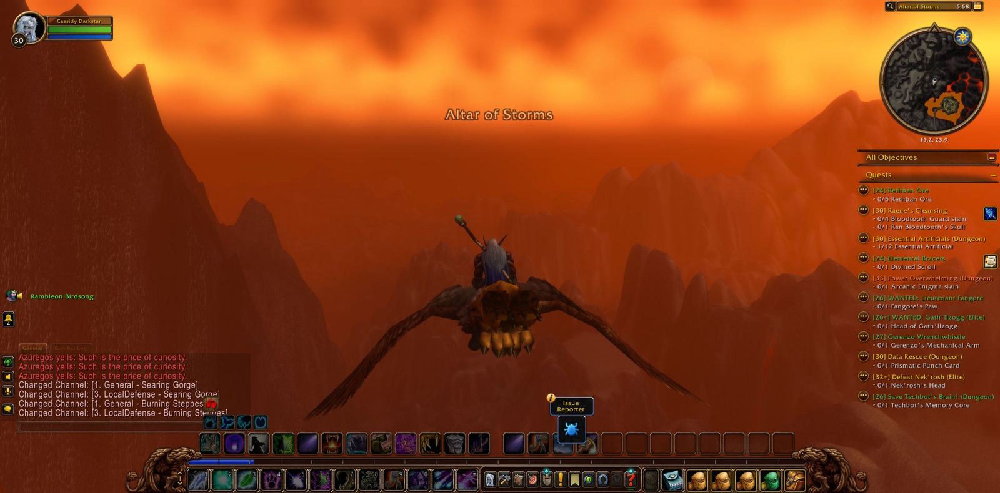
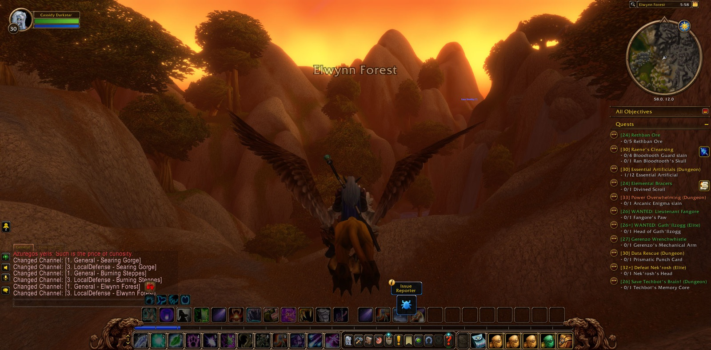

Cassidy Darkstar set out from Menethil Harbor in the Wetlands, and he did not linger there. He came next to Nighthaven in Moonglade, and passed by Lake Elune'ara into Darkshore, and a picture was taken as each of those lands was entered, as though he meant to keep some record of the road. By the Ruins of Mathystra and Mist's Edge he went, out over the Veiled Sea to Rut'theran Village beneath Teldrassil, where he stayed a while before turning back across the water. Then he went south down the long coast of his people: Auberdine, the Long Wash, the Twilight Shore, and so to the Zoram Strand in Ashenvale.


The road ran far beyond the lands of the Kaldorei. He crossed the Stonetalon Mountains by Stonetalon Peak and the Charred Vale, and came down into Desolace, past Tethris Aran, Kolkar Village and Magram Village. He touched the edge of Shen'dralas at Bristleback Retreat and the Valley of Bones, and then went on into Mulgore, by the Winterhoof Water Well and the Rolling Plains. In the Southern Barrens he passed Agama'gor and Bramblescar and walked the Southern Gold Road. He came to Northwatch Hold and the Merchant Coast. At last he came by Dreadmurk Shore and the Great Sea to Theramore Isle in Dustwallow Marsh. Many lands lay behind him now, and at each new one another picture was taken.


In the Foothold Citadel of Theramore he brought to its end the errand called James Hyal, and there he took up two more: Journey to Astranaar, and Highperch Venom. He went out again upon the Great Sea as far as Baradin Bay, and returned to Theramore Isle. Then he set out once more over the water, through the South Seas to Tanaris. He came ashore at Wavestrider Beach and went to Steamwheedle Port and Gadgetzan. The desert did not go easily with him, and he fell there more than once. He rose again each time, and his purpose did not change.


From Gadgetzan he came again to Nighthaven, and from Moonglade he took the northern road a second time: Lake Elune'ara, Darkshore and the Ruins of Mathystra, Mist's Edge, the Veiled Sea and Rut'theran Village, then back to Auberdine and down the Long Wash and the Twilight Shore. But at the Zoram Strand he did not turn to the mountains. He went inland into Ashenvale, by Lake Falathim and the Shrine of Aessina, and so came to Astranaar. There the Journey to Astranaar was done, and a long errand reached its end in the green country of his own kin.


Cassidy had gone round half the world and come home again, and he had gained no new strength by it, only the knowledge of many roads. Highperch Venom remained in his keeping, and beyond Astranaar the paths of Ashenvale ran on under the trees.



